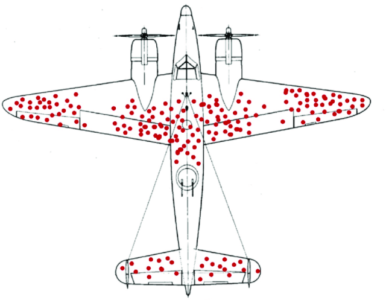

you: indigenous peoples had great respect for the environment and lived in harmony with nature
me:

resist microstructural oppression
you: indigenous peoples had great respect for the environment and lived in harmony with nature
me:
